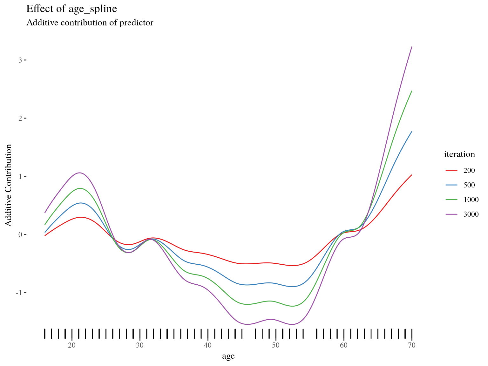

compboost
Fast and Flexible Component-Wise Boosting
Daniel Schalk
November 29, 2018
Use-Case
We are owners of a small stand at the Christmas market where we sell mulled wine.
Since we are very interested in the health of our customers, we only sell to customers who we expect to drink less than 15 litres per year.
To estimate how much a customer will drink, we have collected data from 200 customers in recent years.
These data include mulled wine consumption, age, sex, country of origin, weight, body size, and 200 characteristics (that have absolutely no influence).
| mw_consumption | gender | country | age | weight | height | noise1 |
|---|---|---|---|---|---|---|
| 10.757836 | f | Seychelles | 21 | 119.25022 | 157.8700 | 0.1680415 |
| 0.000000 | f | Poland | 57 | 67.71699 | 157.4757 | 0.8075164 |
| 10.989952 | m | Seychelles | 25 | 65.54362 | 181.6085 | 0.3849424 |
| 3.196762 | f | Germany | 68 | 84.81318 | 195.9256 | 0.3277343 |
| 0.000000 | m | Ireland | 39 | 85.29784 | 163.8867 | 0.6021007 |
| 3.838706 | f | Germany | 19 | 102.74955 | 173.8021 | 0.6043941 |
| 0.000000 | f | Poland | 66 | 98.53560 | 199.6502 | 0.1246334 |
| 1.232687 | f | Seychelles | 62 | 108.21359 | 198.1014 | 0.2946009 |
| 15.356082 | m | Seychelles | 22 | 62.08281 | 180.0732 | 0.5776099 |
| 4.147584 | m | Germany | 52 | 75.42288 | 169.9889 | 0.6309793 |
With these data we want to answer the following questions:
- Which characteristics of the customer are important to be able to guess the consumption?
- What does the effect of important features look like?
- How does the model behave on unseen data?
What can we do to respond to all the questions?
Component-Wise Boosting
Component … what?
The Idea Behind Component-Wise Boosting

Why Component-Wise Boosting?
Inherent (unbiased) feature selection.
Resulting model is sparse since important effects are selected first and therefore it is able to learn in high-dimensional feature spaces (\(p \gg n\)).
Parameters are updated iteratively. Therefore, the whole trace of how the model evolves is available.
About compboost
The compboost package is a fast and flexible framework for model-based boosting completely written in C++:
With
mboostas standard, we want to keep the modular principle of defining custom base-learner and losses.Completely written in
C++and exposed byRcppto obtain high performance and full memory control.RAPI is written inR6to provide convenient wrapper.Major parts of the
compboostfunctionality are unit tested againstmboostto ensure correctness.
Use-Case
compboost
cboost = boostSplines(data = mulled_wine_data, target = "mw_consumption",
loss = LossQuadratic$new(), learning.rate = 0.005, iterations = 3000,
trace = 600)
## 1/3000 risk = 7.4
## 600/3000 risk = 3.5
## 1200/3000 risk = 2.2
## 1800/3000 risk = 1.5
## 2400/3000 risk = 1.1
## 3000/3000 risk = 0.76
##
##
## Train 3000 iterations in 4 Seconds.
## Final risk based on the train set: 0.76Effect Visualization
cboost$plot("age_spline", iters = c(200, 500, 1000, 3000))
Early Stopping
n_data = nrow(mulled_wine_data)
idx_train = sample(x = seq_len(n_data), size = n_data * 0.75)
idx_test = setdiff(x = seq_len(n_data), idx_train)Early Stopping
target = "mw_consumption"
cboost = Compboost$new(data = mulled_wine_data[idx_train,],
target = target, loss = LossQuadratic$new(), learning.rate = 0.005)
for (feature_name in setdiff(names(mulled_wine_data), target)) {
if (feature_name %in% c("gender", "country")) {
cboost$addBaselearner(feature = feature_name, id = "category",
bl.factory = BaselearnerPolynomial, degree = 1, intercept = FALSE)
} else {
cboost$addBaselearner(feature = feature_name, id = "spline",
bl.factory = BaselearnerPSpline, degree = 3, n.knots = 10)
}
}Early Stopping
oob_data = cboost$prepareData(mulled_wine_data[idx_test,])Early Stopping
cboost$addLogger(logger = LoggerOobRisk, use.as.stopper = FALSE,
logger.id = "oob_logger", used.loss = LossQuadratic$new(),
eps.for.break = 0, oob.data = oob_data,
oob.response = mulled_wine_data$mw_consumption[idx_test])
cboost$train(3000, trace = 1500)
## 1/3000 risk = 7.7 oob_logger = 6.7
## 1500/3000 risk = 2.2 oob_logger = 2.8
## 3000/3000 risk = 1 oob_logger = 2.9
##
##
## Train 3000 iterations in 7 Seconds.
## Final risk based on the train set: 1
inbag_trace = cboost$getInbagRisk()[-1]
logger_data = cboost$getLoggerData()
risk_data = data.frame(
risk = c(inbag_trace, logger_data[["oob_logger"]]),
type = rep(c("inbag", "oob"), each = length(inbag_trace)),
iter = rep(seq_along(inbag_trace), times = 2)
)Early Stopping
ggplot(data = risk_data, aes(x = iter, y = risk, color = type)) +
geom_line() + theme_tufte() + scale_color_brewer(palette = "Set1")
Early Stopping
cboost$train(980)Feature Importance

Using Custom Losses
lossPoi = function (truth, pred) {
return (-log(exp(pred)^truth * exp(-exp(pred)) / gamma(truth + 1)))
}
gradPoi = function (truth, pred) {
return (exp(pred) - truth)
}
constInitPoi = function (truth) {
return (log(mean.default(truth)))
}
# Define custom loss:
my_poisson_loss = LossCustom$new(lossPoi, gradPoi, constInitPoi)Using Custom Losses
cboost = boostSplines(data = mulled_wine_data, target = "mw_consumption",
optimizer = OptimizerCoordinateDescent$new(), loss = my_poisson_loss,
learning.rate = 0.005, iterations = 3000, trace = 600, n.knots = 10,
degree = 3)
## 1/3000 risk = 3.3
## 600/3000 risk = 1.5
## 1200/3000 risk = 1.2
## 1800/3000 risk = 1.1
## 2400/3000 risk = 1
## 3000/3000 risk = 0.97
##
##
## Train 3000 iterations in 5 Seconds.
## Final risk based on the train set: 0.97Using Custom Losses
params = cboost$getEstimatedCoef()
params[["country_Seychelles_category"]]
## [,1]
## [1,] 1.351064
params[["country_Poland_category"]]
## [,1]
## [1,] -0.9612926From C++ to R
Rcpp
- Conversion between
RandC++data structures, such as vectors, matrices, or even whole classes - Seamless integration of Armadillo for linear algebra
- Complicated stuff like compilation, or again, the conversion between
RandC++are handled automatically
C++ to R Wrap Up
Problems When Using C++
- Save object is not possible at the moment
- Memory managing is not easy \(\Rightarrow\) Segmentation folds may happen
What Happens Next?
- Better selection process of base-learner
- Fasten the training by parallel computations
- More extensive functionality:
- Functional data structures and loss functions
- Unbiased feature selection
- Effect decomposition into constant, linear, and non-linear and selection